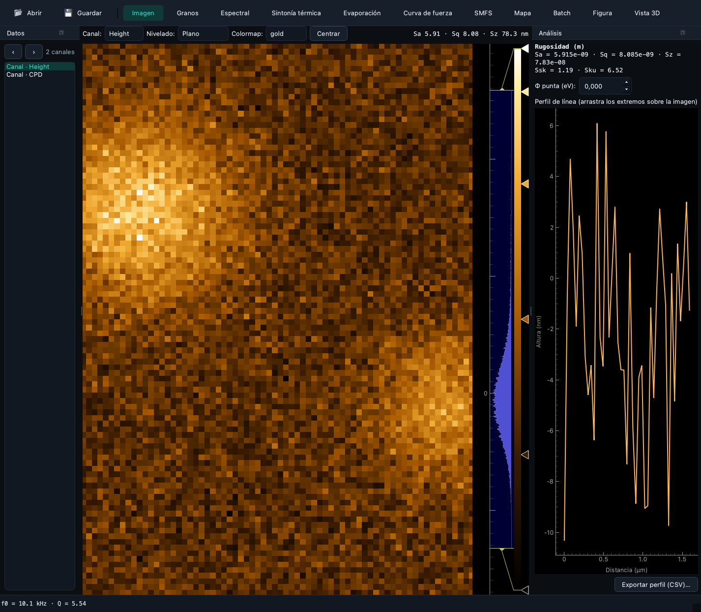
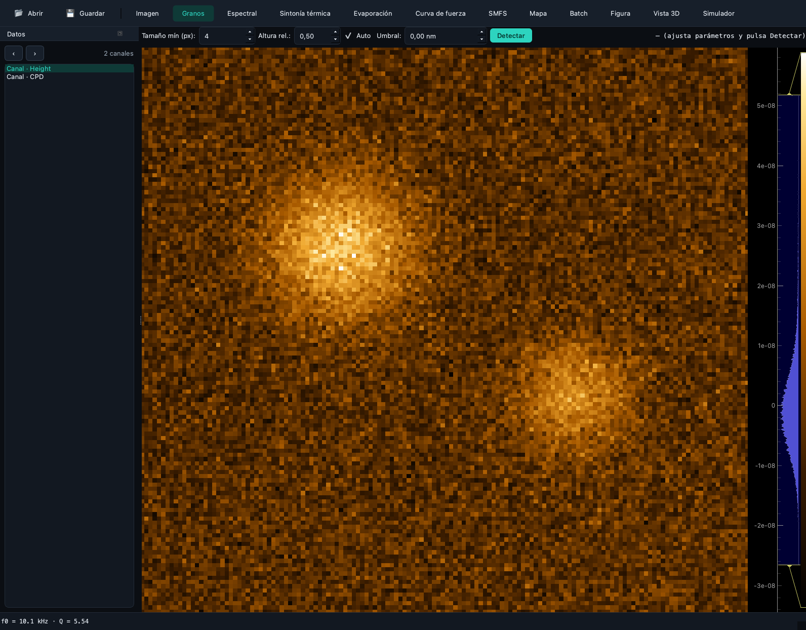
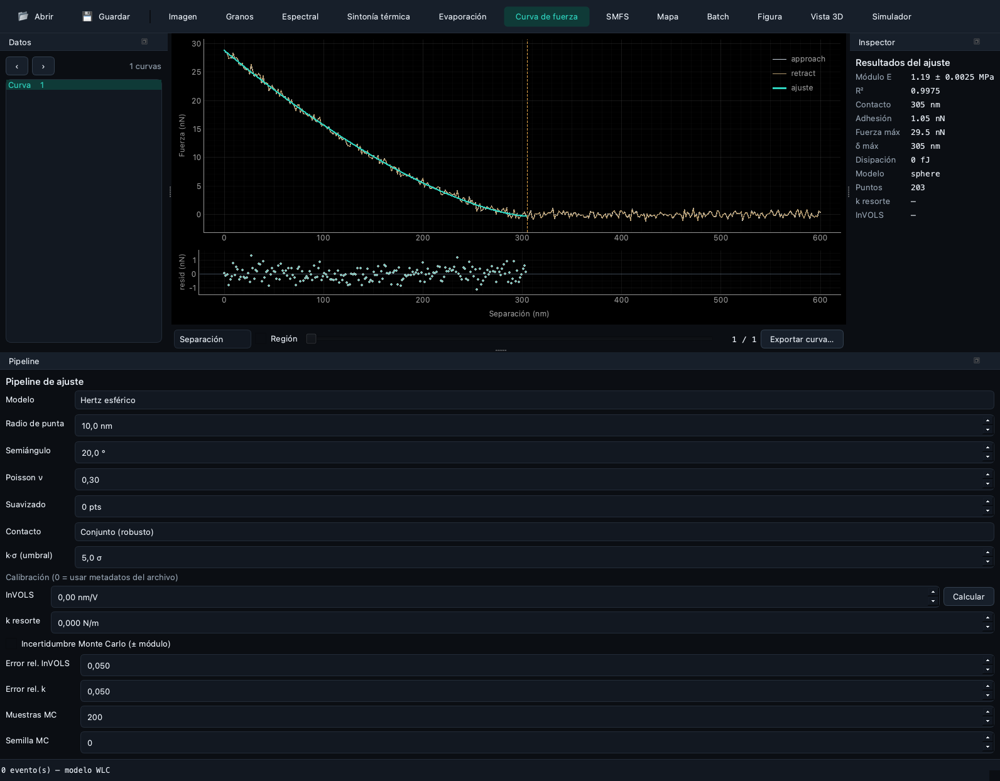
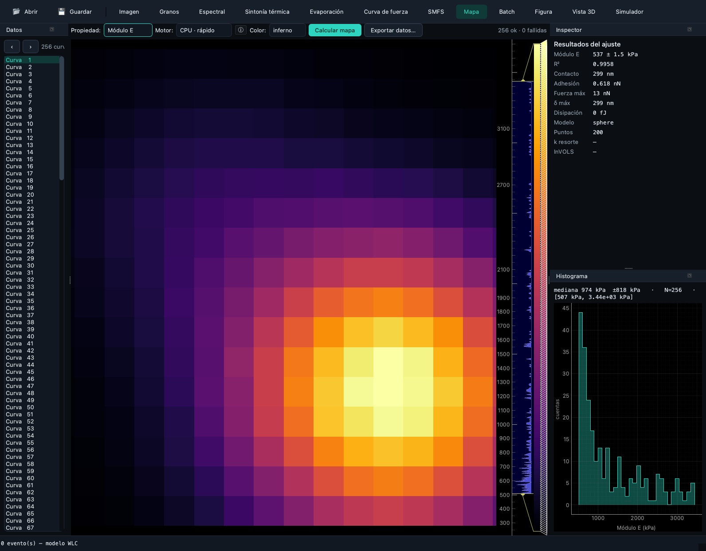
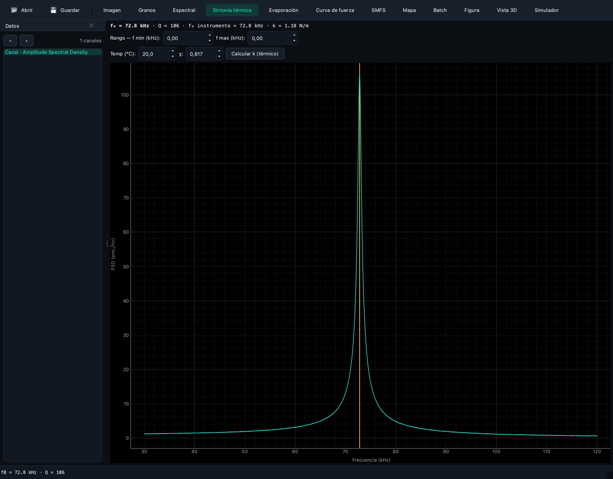
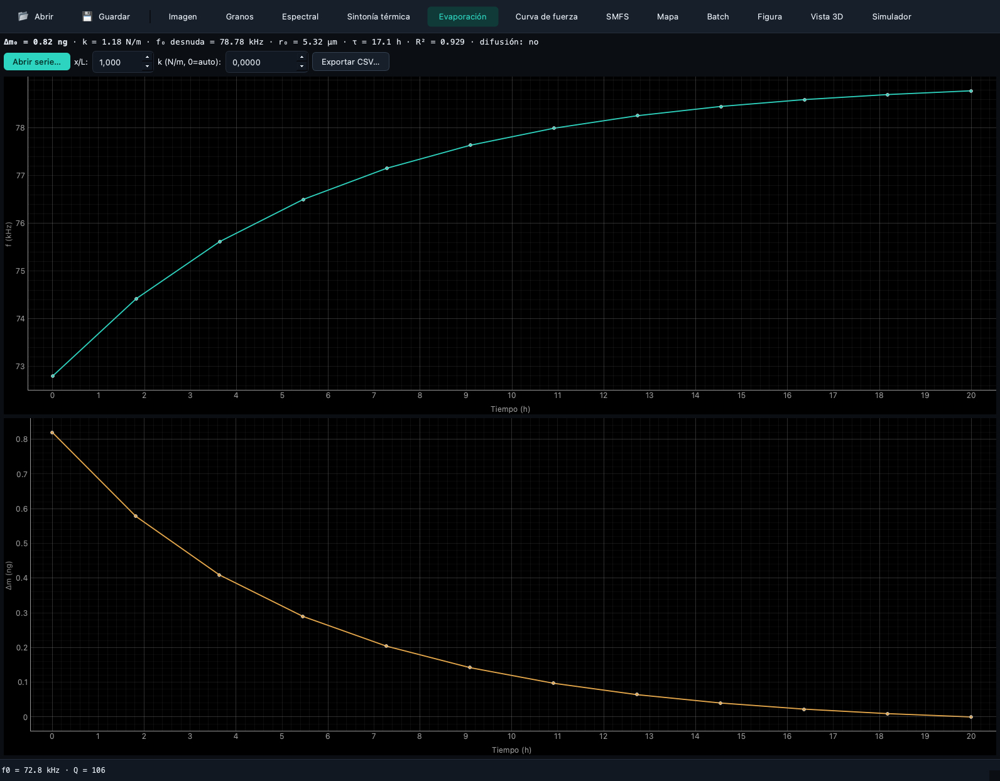

Fathom · Interactive scientific workspace
Operate the computation without losing sight of it
Fathom provides perspective-based exploration, parameter configuration, fitting, maps, figures and reports over SPM-Kit Core.
Role in one sentence¶
SPM-Kit computes. Fathom lets the researcher inspect, configure and operate those computations interactively.
Fathom is not a separate analyzer and is not distributed as a separate package.
It is the spmkit.gui workspace installed through the gui extra.
Problem it solves¶
Some scientific choices are easier to make with linked views: picking a channel, checking a contact point, moving through force curves, comparing a fit with its residuals, or arranging a figure. Fathom exposes those operations while keeping the numerical code in Core.
What it does¶
- inspects a dropped/opened file before routing it as image or force data;
- organizes work into perspectives rather than a single crowded window;
- shares navigator, inspector, pipeline, log and histogram panels where useful;
- edits analysis parameters and invokes the associated Core path;
- supports project files, a command palette and keyboard navigation;
- renders images, curves, maps, spectra, fit quality and publication figures;
- exports JSON, CSV, figures and reports through the paths implemented for the active data.
What it deliberately does not do¶
- reimplement numerical equations separately from Core;
- hide errors by inventing a result or a default channel;
- turn a synthetic screenshot into experimental evidence;
- make an automatic scientific decision about model validity;
- guarantee that every perspective has equal evidence maturity;
- replace reproducible batch/API use when a script is the better instrument.
Installation and launch¶
python -m pip install "spmkit[gui] @ git+https://github.com/kegouro/spmkit@main"
spmkit gui
spmkit gui scan.nid
Verification without opening a window:
First session¶
- Install the
guiextra and launchspmkit gui. - Open a file with Ctrl+O, the toolbar action or drag-and-drop.
- Inspect the file route. Mixed image/force containers prompt for the intended kind.
- Choose a perspective from the top bar or press Ctrl+K.
- Confirm channel, units, physical field of view and direction.
- Configure leveling, model, tip geometry, thresholds or other visible parameters.
- Run the operation and inspect the result plus available QC indicators.
- Move through curves/maps rather than trusting one representative example.
- Export the appropriate result, figure or report.
- Save the
.spmprojproject with Ctrl+S and preserve the source/version context.
Workspace model¶
| Surface | Responsibility |
|---|---|
| Perspective bar | chooses the scientific task and visible panels |
| Navigator | shows loaded data and routes selectable channels/curves |
| Main canvas | displays the active image, curve, map, spectrum or figure |
| Inspector | exposes selected-object/result information |
| Pipeline | holds force-analysis configuration and processing state |
| Histogram | inspects property-map distributions |
| Log | preserves task and batch messages visible to the user |
| Command palette | searches registered actions and all current perspectives |
A project stores the open file reference, current analysis parameters and active perspective. It is not a copy of the instrument file; keep the original at a stable lawful location.
Which Fathom perspective should I use?¶
The labels below are taken from the current built-in module declarations. The English intent is followed by the current display label and internal key.
Topography and roughness
Imagen · `image`
Image canvas, navigator and image-analysis panel for channel inspection, leveling, roughness and KPFM.
Particle segmentation
Granos · `grains`
Thresholded particles and grain statistics over the current image route.
PSD and self-affinity
Espectral · `spectral`
Radial PSD, Hurst/fractal fit and correlation-length inspection.
Cantilever spectrum
Sintonía térmica · `resonance`
Thermal spectrum extraction and resonance analysis.
Time-dependent resonance
Evaporación · `evaporation`
Frequency, derived mass and declared evaporation-law analysis.
One force curve
Curva de fuerza · `force`
Contact mechanics, visible pipeline parameters, fit and quality indicators.
Molecule pulling
SMFS · `smfs`
Retract events and WLC/FJC-oriented single-molecule analysis.
Force-volume properties
Mapa · `map`
Computed property maps with inspector and histogram.
Multiple files
Batch · `batch`
Batch table and log for repeated processing.
Publication output
Figura · `figure`
Figure composition and scientific image export.
Surface rendering
Vista 3D · `view3d`
Three-dimensional presentation of the active image surface.
Educational modeling
Simulador · `simulator`
Cantilever simulation. Treat as educational/numerical, not a validated measurement.
Current interface gallery¶
All images below are generated from deterministic synthetic data by
scripts/gen_docs_media.py. They demonstrate the interface and routing only.






Shortcuts and command palette¶
| Action | Shortcut |
|---|---|
| Open file | Ctrl+O |
| Save project | Ctrl+S |
| Command palette | Ctrl+K |
| Calculate map | Ctrl+M |
| Export current results | Ctrl+E |
| Generate report | Ctrl+Shift+R |
| Toggle light/dark theme | Ctrl+Shift+L |
| Appearance dialog | Ctrl+Shift+A |
| Copy results | Ctrl+Shift+C |
| Pin current curve | Ctrl+P |
| Previous/next curve | Ctrl+Left / Ctrl+Right |
| First/last curve | Ctrl+Home / Ctrl+End |
The command palette also registers “Go to …” actions for every assembled perspective, including plugin-provided modules.
Detailed workflow¶
For a force-volume file:
- Open the file and choose the force route when prompted.
- Start in Curva de fuerza and inspect an individual curve.
- Set model and tip geometry in the Pipeline panel.
- Check contact placement, R², RMSE and residual behavior on more than one curve.
- Move to Mapa and compute through the selected backend.
- Inspect the modulus distribution and invalid/missing regions.
- Export the map CSV/figure or a full report.
- Save the project and preserve input hash, package version and calibration assumptions.
The allowed claim is that the configured SPM-Kit path produced the inspected result. A good-looking map alone does not establish that the contact model or instrument calibration is valid for the sample.
Architecture and integrations¶
file → Core reader/inspection → domain object
↓
Fathom session → ViewModel → public Core analysis
↓
panel/canvas ← structured result → export/report
- Core: implemented in-process dependency and sole numerical implementation.
- Projects/recipes: Fathom preserves the supported application state for repeat work; the Core CLI remains preferable for large reproducible batches.
- Validation: campaigns normally invoke the public package/CLI, not Fathom; GUI screenshots are not campaign evidence.
- Plugins: modules can contribute panels and perspectives through the registered extension architecture after numerical behavior is stable.
Scientific status¶
Fathom's controls exercise capabilities with different evidence levels. The UI itself has GUI/software tests; a displayed physical-model result inherits the evidence and limitations of that Core path. See the implementation map and scientific status.
Limitations¶
- The current display labels are Spanish-first even though this portal is English.
- Fathom requires a desktop display and is not the batch/HPC interface.
- Some export/report actions are data-route dependent.
- Quality indicators describe fit behavior, not universal model validity.
- Plugin stability follows the versioned public contracts; pre-1.0 APIs may evolve.
- Interface screenshots are synthetic demonstrations, not experimental evidence.
Contribute¶
Useful contributions include accessible keyboard workflows, deterministic GUI tests, result/QC presentation, and a Fathom panel only after its numerical Core capability and validation path are defined. See Extending.
Repository · Full user manual · Quick start · Next: Data Hunter